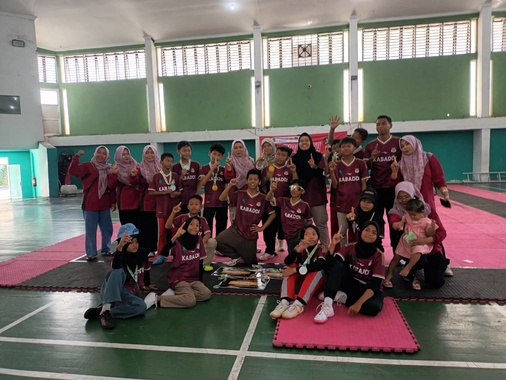
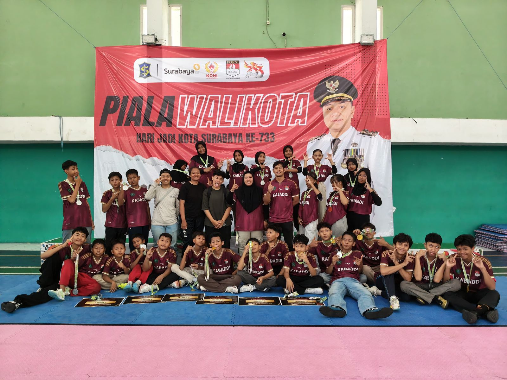

🔥 Semangat Juang di Arena Kabaddi
SDN Kebonagung 1 Sukodono kembali menorehkan prestasi membanggakan melalui cabang olahraga Kabaddi. Prestasi tersebut diraih dalam ajang bergengsi Piala Walikota Surabaya 2026 yang dilaksanakan pada 14–15 Mei 2026.
Keikutsertaan dalam kompetisi ini menjadi pengalaman berharga bagi para peserta didik. Mereka tidak hanya berlatih untuk memenangkan pertandingan, tetapi juga belajar mengenai kerja sama tim, kedisiplinan, keberanian, sportivitas, serta bagaimana menghadapi tekanan dan tantangan dalam sebuah pertandingan.
💪 Perjuangan tidak selalu mudah. Setiap pertandingan membutuhkan konsentrasi, keberanian, strategi, dan kekompakan. Para atlet Kabaddi SDN Kebonagung 1 menunjukkan semangat pantang menyerah. Ketika menghadapi lawan yang tangguh, mereka tetap berusaha memberikan kemampuan terbaik hingga pertandingan berakhir.


🏅 Prestasi yang Membanggakan
Perjuangan keras tersebut akhirnya membuahkan hasil yang sangat membanggakan. Peserta didik SDN Kebonagung 1 berhasil meraih sejumlah prestasi dalam kategori Super Five. Prestasi ini menjadi bukti bahwa kerja keras, latihan, disiplin, dan semangat pantang menyerah dapat menghasilkan pencapaian yang luar biasa.
🥇 Daftar Prestasi 🥈
Juara 1
Kategori
Super Five Putra
Juara 2
Kategori
Super Five Putra
Juara 2
Kategori
Super Five Putri
🌟 Bukan Sekadar Meraih Juara
Lebih dari sekadar piala dan penghargaan, keikutsertaan dalam Piala Walikota Surabaya 2026 memberikan pelajaran penting bagi para peserta didik. Mereka belajar bahwa keberhasilan lahir dari proses yang panjang, latihan yang konsisten, dan keberanian untuk terus mencoba.
Setiap serangan, pertahanan, dan kerja sama yang dilakukan di lapangan menjadi bagian dari proses pembentukan karakter. Semangat untuk bangkit setelah mengalami kesulitan menjadi salah satu nilai penting yang dibawa pulang oleh para peserta.
Prestasi ini juga menjadi motivasi bagi seluruh warga SDN Kebonagung 1 Sukodono untuk terus mendukung peserta didik dalam mengembangkan potensi mereka, baik di bidang akademik maupun nonakademik.
"Berani Bertanding, Pantang Menyerah, Raih Prestasi!"
Kemenangan adalah hasil dari kerja keras, kekompakan, disiplin, dan semangat untuk terus berjuang.